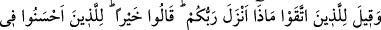
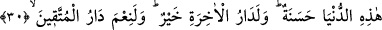
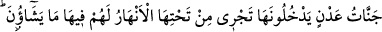
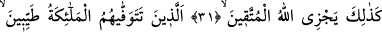
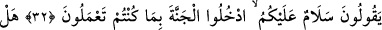
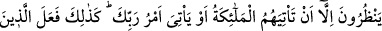
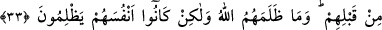
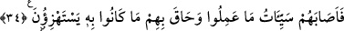

GÜZEL DAVRANANA
GÜZEL MÜKÂFAT
30. (Kötülüklerden) sakınanlara: Rabbiniz ne indirdi? denildiğinde, “Hayır
(indirdi)” derler. Bu dünyâda güzel davrananlara, güzel mükâfat vardır. Âhiret
yurdu ise daha hayırlıdır. Takvâ sâhiplerinin yurdu gerçekten güzeldir!
31. (O yurt,) girecekleri, zemininden ırmaklar akan Adn cennetleridir. Onlar için
orada diledikleri her şey vardır. İşte Allah, takvâ sâhiplerini böyle mükâfatlandırır.
32. (Onlar,) meleklerin, “Size selâm olsun. Yapmış olduğunuz (iyi) işlere karşılık
cennete girin” diyerek tertemiz olarak canlarını aldıkları kimselerdir.
33. (Kâfirler) kendilerine meleklerin gelmesinden veya Rablerinin emrinin
gelmesinden başka bir şey mi bekliyorlar? Onlardan öncekiler de böyle
yapmışlardı. Allah onlara zulmetmedi, fakat onlar kendilerine zulmediyorlardı.
34. Sonunda yaptıklarının cezası onlara ulaştı ve alay etmekte oldukları şey
onları çepeçevre kuşatıverdi.
Rivâyet edilir ki: Arap kabileleri, hac mevsiminde Rasûlullah (s.a.) hakkında haber
getirecek kimseleri Mekke’ye gönderiyorlardı. O kimse geldiğinde Mekke yollarını
tutanlar onun Mekke’ye girmesine mâni oluyor ve ona geri dönmesini emrediyor ve:
“Onunla karşılaşmaman senin için daha hayırlıdır. Çünkü o, sihirbaz, kâhin, yalancı ve
mecnundur.” diyorlardı. Gelen kişi de: “Eğer Muhammed’in durumunu öğrenmeden ve
onu görmeden kavmime dönersem, kötü bir elçi olmuş olurum.” diyordu. Muhammed
(s.a.)’in ashabıyla karşılaşır, onlar da ona onun doğruluğunu haber verirlerdi. İşte şu
âyet bu konu hakkında nâzil olmuştur: